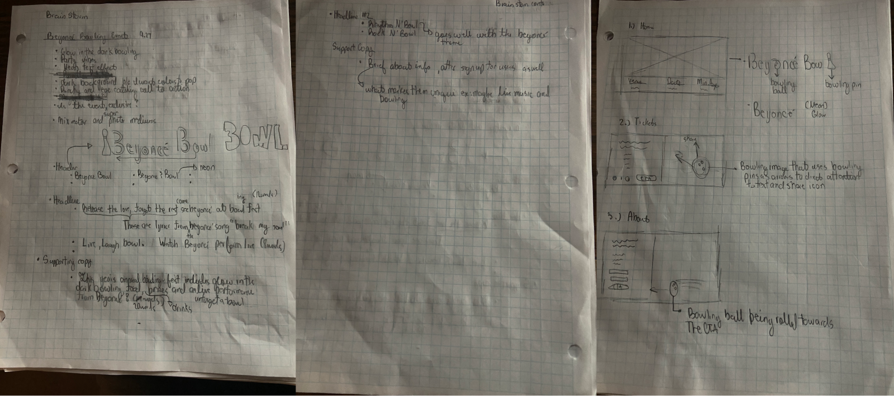
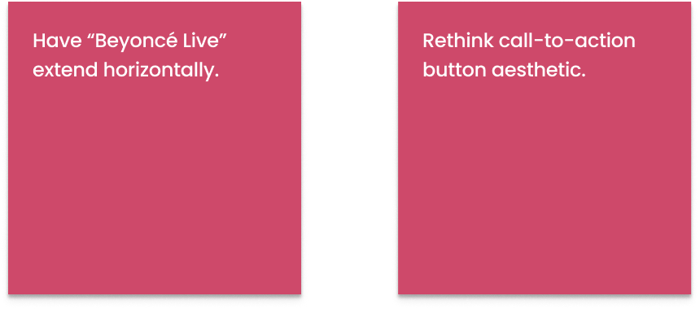

| Color Psychology
The primary color I selected for this design was pink. Pink was the best option for this concept because it symbolizes passion, nostalgia, and creates urgency. I also was inspired to use pink to create a sense of familiarity because Beyoncè's "Formation Tour" incorporated pink as a brand color.

| Font Style
I decided to use Staatliches as my header font. This was because it's a font with strong bold letters that are easy to read.Likewise, I used Overpass as my body font because of readability. Since this font is san-serif, users are able to read and comprehend information faster.

| Iteration #1
I started my design process by sketching and writing ideas. I began to think about how I wanted my header text to look. I decided to go with a neon theme because throughout this project I kept thinking about galaxy bowling. I also began to sketch my landing page layout. I wanted to have a scrollable web page that contained three sections. For each one of these sections, my plan was to create vector drawings that would direct the user's attention to call-to-action buttons and important text.

| Iteration #1 Wireframes
After sketching, I decided to create a few low fidelity wireframes to get a better idea of how I wanted to layout each section.

I then began to play with font concepts and finalized vector drawings.

| Iteration #1 High Fidelity
This is the first iteration of the landing page design. The page has three sections.Section one contains the venue name, date, and minimum age for entrance. The second section offers a call-to-action for users to buy tickets. The last section offers users the ability to subscribe to the bowling alley's weekly newsletter.

| Iteration #1 Feedback
The feedback I received for my first iteration was to condense information into just one section to limit scrolling. After thinking more about the user, I realized they don't care about information that doesn't discuss Beyoncè.
| Iteration #2
For the second iteration of the landing page design, I decided to focus on condensing information. After that, I added depth to my design by placing text behind Beyoncè's head. Finally, I adjusted the shape and size of my call-to-action button.

| Iteration #2 Feedback

| Final Design